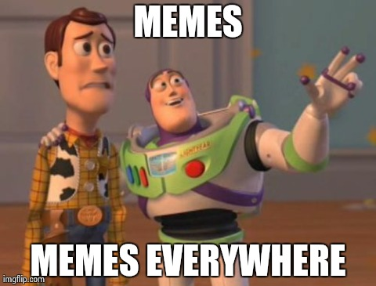
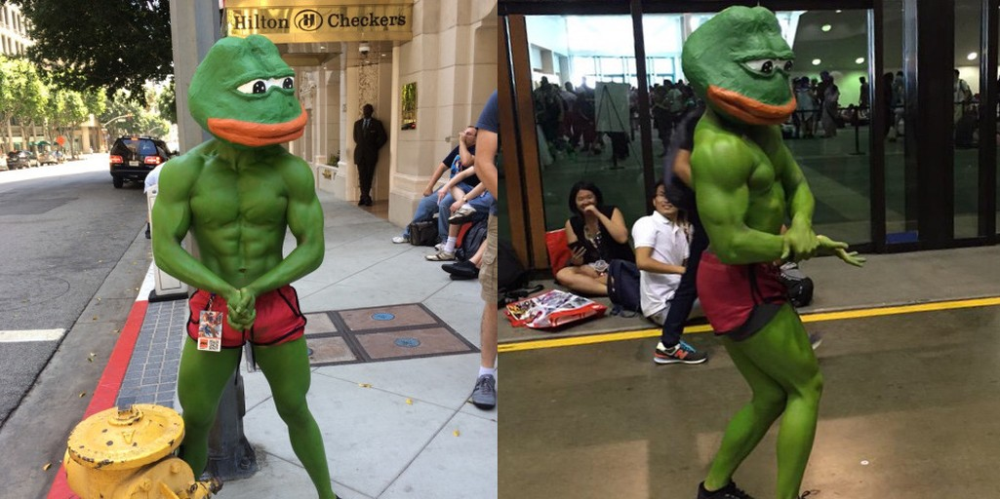

A meme is "an idea, behavior, or style that spreads from person to person within a culture", according to Merriam-Webster. Memes are so important that there is a Wikipedia article dedicated to it. However, that definition is garbage. Everyone knows that a quality meme has to look well done and professional, but to the individual, a meme has a special meaning.
There is a fine line between a regular meme and a dank one. If all you do is make regular memes, you're probably twelve years old. However, if you make your memes dank, then you are a respected member of the meme community. Gaining this popularity is very important, as without it you're just another nerd with a grand total of three views on what you thought was a really good meme. You're wrong.
Students at CHS have dedicated lots of time and hard work towards the study of memes and their dankness. Today, this information is freely available for the first time in meme history. Click on the names below to learn what we have discovered about memes.
Great! Email us: dank@studyofme.me
Seriously, I'll add in a page if you really want me to.
Figure it out another way.
I spent most of class making this. Why? ¯\_(ツ)_/¯ There's no real purpose behind it, but I didn't have much to do and this was a good way to kill time.